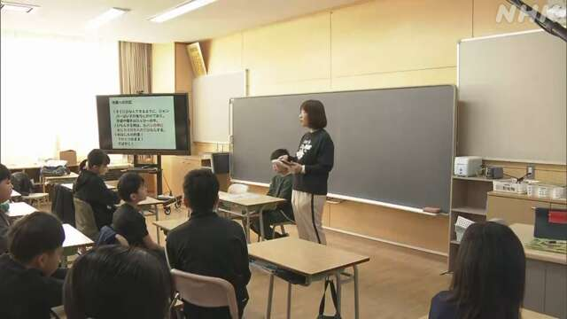

最新ニュース
1️⃣ トランプ大統領「23日を過ぎても戦いを止める」
アメリカとイランは今、話し合いをするために戦いを2週間止めています。しかし、うまく進んでいません。
アメリカのトランプ大統領は、戦いを止めるのは日本の時間の23日の午前までだと言っていました。
しかし、SNSに「パキスタンの首相からイランを攻撃しないように言われた。決めた日を過ぎても戦いを止める」などと書きました。いつまで止めるかは書いていません。
アメリカの軍は、今もイランの港に入る船がホルムズ海峡を通ることができないようにしています。イランは、これに反対しています。
2つの国の話し合いがどうなるか、まだわかりません。
2️⃣ 北海道の小学校 地震や津波のときにどうしたらいいかを話した

20日の地震のあと、国は北海道や東北地方など182の市や町、村に、特別な情報を出して、気をつけるように言っています。
北海道浦河町の小学校では、地震や津波が来たときにどうしたらいいか、先生が子どもたちに話しました。
津波が来たら、すぐに逃げることが大切です。
先生は、いつもは教室の外に置いている帽子や上着などを、自分の近くに置くように言いました。そして教室に水と体を温めるカイロを用意したので、持って逃げましょうと言いました。
6年生の男の子は「地震が来たら、すぐ山に逃げるようにします」と話していました。
3️⃣ 東京の遊園地で事故 働いていた女性が亡くなった
21日、東京の文京区にある遊園地で事故がありました。働いていた24歳の女性が亡くなりました。
女性は、「フライングバルーン」という乗り物を6人でチェックしていました。
この乗り物は、客が乗るいすが柱のまわりにあって、高さ10mまで上がります。
女性がチェックしていたとき、上で止まっていたいすが急に落ちてきました。
女性は、いすと柱の間で動くことができなくなって、亡くなりました。
警察によると、この乗り物は機械を使って動かしますが、事故が起こったときは誰も動かしていなかったようです。
警察で、事故の原因を調べています。
4️⃣ 「はしか」に気をつけて 授業が休みになった学校もある
「はしか」という病気になる人が増えています。
はしかのウイルスはうつりやすくて、熱やせきが出ます。ひどくなると亡くなることもあります。
東京の新宿区にある小学校で、子どもたちや先生など18人がはしかになりました。
学校は今月20日から24日まで、はしかになった人が多い学年を休みにしました。
専門家は「これから休みが続いてたくさんの人が出かけます。ワクチンを受けるなど、はしかにならないように気をつけてください」と話しています。
- 〜ため(に)
- 〜ている / 〜でいる
- 〜ため
- 〜まで
- 〜しか〜ない
- 〜から
- 〜ように
- 〜など
- 〜ても / 〜でも
- 〜すぎる
- 〜こと
- 〜ようにする
- 〜ことができる
- 〜後 / 〜あと
- 〜や〜など
- 〜ましょう / 〜ましょうか
- 〜ので
- 〜がある / 〜がいる
- 〜という
- 〜ようだ / 〜みたいだ
- 〜によると
- 〜になる
- 〜やすい
- 〜から〜まで
- 〜ならない
- 〜てください / 〜でください
vebaev.github.io
Generated: 2026-04-22 11:07:49 UTC